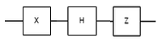

Introduction
The Axioms of Quantum Mechanics
Qubits
Quantum Logic Gates
Questions
Programming · X 2015
Welcome to Day 1 of the Programming Event of MINET X 2015. We hope you have as much fun solving the problems as we had making them. You have been provided with the Code::Blocks and Turbo C++ environments. Both of these, as well as their source and binary directories are on your Desktop. The event will be three hours long. There are five rounds and each round comprises three questions. Your answers will have a direct bearing on your team’s stock prices. Questions that are in the Easy, Medium and Hard sections will give you an increment in stock prices in the ratio 1:2:4 respectively. Whenever you wish to attempt a question, raise your hand and one of us will come to you. Note that whenever there is an unsuccessful attempt, the maximum points for a problem are halved. So, for instance, if you answer a question perfectly on your third try, you get one-fourth of the maximum points. If you have any questions about the problems, do not be afraid to ask them of us. Have fun, and Make beautiful programs. Best of luck!
Introduction
Nature at the sub-atomic scale behaves totally differently from anything that our experience with the physical world prepares us for. Quantum mechanics is the name of the branch of physics that governs the world of elementary particles such as electrons and photons, and it is paradoxical, unintuitive, and radically strange. Below is a sampling of a few such odd features:
- Complete knowledge of a system’s state is forbidden - A measurement reveals only a small amount of information about the quantum state of the system.
- The act of measuring a particle fundamentally disturbs its state.
- Quantum entities do not have trajectories. All that we can say for an elementary particle is that it started at A and was measured later at B. We cannot say anything about the trajectory or path it took from A to B.
- Quantum Mechanics is inherently probabilistic. If we prepare two elementary particles in identical states and measure them, the results may be different for each particle.
- Quantum entities behave in some ways like particles and in others like waves. But they really behave in their own unique way, neither particles nor waves.
These features are truly strange, and difficult to accept. To quote the great physicist Niels Bohr, “Anyone who is not shocked by quantum theory has not understood it.” We start by describing a simple experiment that highlights many differences between quantum mechanics and our classical intuition. It is the famous double slit experiment. The intuition gained in the process will help us as we define qubits, and more generally in the study of quantum computing.
The double slit experiment
What is the nature of light? You may have learned light is electromagnetic waves propagating through space. Also, you may have learned that light is made of a rain of individual particles called photons. But these two notions seem contradictory, how can it be both?
The debate over the nature of light goes deep into the history of science. The eminent physicist Isaac Newton believed that light was a rain of particles, called corpuscles. At the beginning of the nineteenth century, Thomas Young demonstrated with his famous double-slit interference experiment that light propagates as waves. With Maxwell’s formulation of electromagnetism at the end of the nineteenth century, it was generally accepted that light is propagated as electromagnetic waves, and the debate seemed to be over. However, in 1905, Einstein was able to explain the photoelectric effect, by using the idea of light quanta, or particles which we now call photons. Similar confusion reigned over the nature of electrons, which behaved like particles, but then it was discovered in electron diffraction experiments, performed in 1927, that they exhibit wave behavior. So do electrons behave like particles or waves? And what about photons? This great challenge was resolved with the discovery of the equations of quantum mechanics. But the theory is not intuitive, and its description of matter is very
different from our common experience.
To understand what seems to be a paradox, we look to Young’s double-slit experiment. Here’s the set up: a source of light is shone at a screen with two very thin, identical slits cut into it. Some light passes through the two slits and lands upon a subsequent screen. Take a look at the figure for a diagram of the experiment setup.

First, think about what would happen to a stream of bullets going through this double slit experiment. The source, which we think of as a machine gun, is unsteady and sprays the bullets in the general direction of the two slits. Some bullets pass through one slit, some pass through the other slit, and others don’t make it through the slits. The bullets that do go through the slits then land on the observing screen behind them. Now suppose we closed slit 2. Then the bullets can only go through slit 1 and land in a small spread behind slit 1. If we graphed the number of times a bullet that went through slit 1 landed at the position y on the observation screen, we would see a normal distribution centered directly behind slit 1. That is, most land directly behind the slit, but some stray off a little due to the small amount randomness inherent in the gun, and because of they ricochet off the edges of the slit. If we now close slit 1 and open slit 2, we would see a normal distribution centered directly behind slit 2.
Now let’s repeat the experiment with both slits open. If we graph the number of times a bullet that went through either slit landed at the position y, we should see the sum of the graph we made for slit 1 and a the graph for slit 2.
Another way we can think of the graphs we made is as graphs of the probability that a bullet will land at a particular spot y on the screen. Let $P_1(y)$ denote the probability that the bullet lands at point y when only slit 1 is open, and similarly for $P_2(y)$. And let $P_{12}(y)$ denote the probability that the bullet lands at point y when both slits are open. Then = $P_{12}(y) = P_1(y)+P_2(y)$. Next, we consider the situation for waves, for example water waves. A water wave doesn’t go through either slit 1 or slit 2, it goes through both. You should imagine the crest of 1 water wave as it approaches the slits. As it hits the slits, the wave is blocked at all places but the two slits, and waves on the other side are generated at each slit as depicted in the figure.
When the new waves generated at each slit run into each other, interference occurs. We can see this by plotting the intensity (that is, the amount of energy carried by the waves) at each point $y$ along the viewing screen. What we see is the familiar interference pattern seen in the figure. The dark patches of the interference pattern occur where the wave from the first slit arrives perfectly out of sync with wave from the second slit, while the bright points are where the two arrive in sync. For example, the bright spot right in the middle is bright because each wave travels the exact same distance from their respective slit to the screen, so they arrive in sync. The first dark spots are where the wave from one slit traveled exactly half of a wavelength longer than the other wave, thus they arrive at opposite points in their cycle and cancel. Here, it is not the intensities coming from each slit that add, but height of the wave. This differs from the case of bullets: $I_{12}(y) \neq I_1(y) + I_2(y)$, but $h_{12}(y) = h_1(y) + h_2(y)$, and $I_{12}(y) = h(y)^2$, where $h(y)$ is the height of the wave and I(y) is the intensity, or energy, of the wave.
Before we can say what light does, we need one more crucial piece of information. What happens when we turn down the intensity in both of these examples? In the case of bullets, turning down the intensity means turning down the rate at which the bullets are fired. When we turn down the intensity, each time a bullet hits the screen it transfers the same amount of energy, but the frequency at which bullets hit the screen becomes less. With water waves, turning down the intensity means making the wave amplitudes smaller. Each time a wave hits the screen it transfers less energy, but the frequency of the waves hitting the screen is unchanged. Now, what happens when we do this experiment with light. As Young observed in 1802, light makes an interference pattern on the screen. From this observation he concluded that the nature of light is wavelike, and reasonably so! However, Young was unable at the time to turn down the intensity of light enough to see the problem with the wave explanation. Picture now that the observation screen is made of thousands of tiny little photo-detectors that can detect the energy they absorb. For high intensities the photo-detectors individually are picking up a lot of energy, and when we plot the intensity against the position y along the screen we see the same interference pattern described earlier. Now, turn the intensity of the light very very very low. At first, the intensity scales down lower and lower everywhere, just like with a wave. But as soon as we get low enough, the energy that the photo-detectors report reaches a minimum energy, and all of the detectors are reporting the same energy, call it $E_0$, just at different rates. This energy corresponds to the energy carried by an individual photon, and at this stage we see what is called the quantisation of light. Photo-detectors that are in the bright spots of the interference pattern report the energy $E_0$ very frequently, while darker areas report the energy $E_0$ at lower rates. Totally dark points still report nothing. This behavior is the behavior of bullets, not waves! We now see that photons behave unlike either bullets or waves, but like something entirely different. Turn down the intensity so low that only one photo-detector reports something each second. In other words, the source only sends one photon at a time. Each time a detector receives a photon, we record where on the array it landed and plot it on a graph. The distribution we draw will reflect the probability that a single photon will land at a particular point.
Logically we think that the photon will either go through one slit or the other. Then, like the bullets, the probability that the photon lands at a point should be $y$ is $P_{12}(y) = P_1(y) + P_2(y)$ and the distribution we expect to see is the two peaked distribution of the bullets. But this not what we see at all. What we actually see is the same interference pattern from before! But how can this be? For there to be an interference pattern, light coming from one slit must interfere with light from the other slit; but there is only one photon going through at a time! The modern explanation is that the photon actually goes through both slits at the same time, and interferes with itself. The mathematics is analogous to that in the case of water waves. We say that the probability $P(y)$ that a photon is detected at y is proportional to the square of some quantity $a(y)$, which we call a probability amplitude. Now probability amplitudes for different alternatives add up. So $a_{12}(y) = a_1(y) + a_2(y)$. But $P_{12}(y) = |a_{12}(y)| 2 \neq |a_1(y)|^ 2 + |a_2(y)|^ 2 = P_1(y) + P_2(y)$.
Logically, we can ask which slit the photon went through, and try to measure it. Thus, we might construct a double slit experiment where we put a photodetector at each slit, so that each time a photon comes through the experiment we see which slit it went through and where it hits on the screen. But when such an experiment is performed, the interference pattern gets completely washed out! The very fact that we know which slit the photon goes through makes the interference pattern go away. This is the first example we see of how measuring a quantum system alters the system.
Here the photon looks both like a particle, a discreet package, and a wave that can have interference. It seems that the photon acts like both a wave and a particle, but at the same time it doesn’t exactly behave like either. This is what is commonly known as the wave-particle duality, usually thought of as a paradox. The resolution is that the quantum mechanical behavior of matter is unique, something entirely new.
What may be more mind blowing still is that if we conduct the exact same experiment with electrons instead of light, we get the exact same results! Although it is common to imagine electrons as tiny little charged spheres, they are actually quantum entities, neither wave nor particle but understood by their wavefunction.
The truth is that there is no paradox, just an absence of intuition for quantum entities. Why should they be intuitive? Things on our scale do not behave like wavefunctions, and unless we conduct wild experiments like this we do not see the effects of quantum mechanics. The following sections describe in more detail some of the basic truths of quantum mechanics, so that we can build an intuition for a new behavior of matter.
The Axioms of Quantum Mechanics
I think I can safely say that nobody understands quantum mechanics.”Paradoxically, the fundamental principles of quantum mechanics can be stated very concisely and simply. The challenge lies in understanding and applying these principles, which is the goal of the rest of the event.
— Richard Feynman
- The superposition principle explains how a particle can be superimposed between two states at the same time.
- The measurement principle tells us how measuring a particle changes its state, and how much information we can access from a particle.
- The unitary evolution axiom governs how the state of the quantum system evolves in time.
We will introduce the basic axioms gradually, starting with simple finite systems, and simplified basis state measurements, and building our way up to the more general formulations. This should allow the reader a chance to develop some intuition about these topics.
The Superposition Principle
Consider a system with $k$ distinguishable (classical) states. For example, the electron in a hydrogen atom is only allowed to be in one of a discrete set of energy levels, starting with the ground state, the first excited state, the second excited state, and so on. If we assume a suitable upper bound on the total energy, then the electron is restricted to being in one of $k$ different energy levels — the ground state or one of $k -1$ excited states. As a classical system, we might use the state of this system to store a number between 0 and $k - 1$. The superposition principle says that if a quantum system can be in one of two states then it can also be placed in a linear superposition of these states with complex coefficients.
Let us introduce some notation. We denote the ground state of our k-state system by $\ket{0}$, and the successive excited states by $\ket{1},\ldots, \ket{k-1}$. These are the $k$ possible classical states of the electron. The superposition principle tells us that, in general, the quantum state of the electron is $\alpha_0 \ket{0}+\ldots+\alpha_{n-1}\ket{n-1}$, where the alphas are complex numbers normalised so that $\Sigma_j |\alpha_j|^2 = 1$. $\alpha_j$ is called the amplitude of the state $\ket{j}$. For instance, if $k = 3$, the state of the electron could be
$$\ket{\psi} = \frac{1}{\sqrt{2}}\ket{0} + \frac{1}{2} \ket{1}+ \frac{1}{2}\ket{2}$$
or
$$\ket{\psi} = \frac{1}{\sqrt{2}}\ket{0} - \frac{1}{2} \ket{1}+ \frac{i}{2}\ket{2}$$
or
$$\ket{\psi} = \frac{1+i}{3}\ket{0} + \frac{1-i}{3} \ket{1}+ \frac{1+2i}{3}\ket{2}$$
The superposition principle is one of the most mysterious aspects about quantum physics — it flies in the face of our intuitions about the physical world. One way to think about a superposition is that the electron does not make up its mind about whether it is in the ground state or each of the $k - 1$ excited states, and the amplitude $\alpha_0$ is a measure of its inclination towards the ground state. Of course we cannot think of $\alpha_0$ as the probability that an electron is in the ground state — remember that $\alpha_0$ can be negative or imaginary. The measurement principle, which we will see shortly, will make this interpretation of $\alpha_0$ more precise.
The Geometry of Hilbert Space
We saw above that the quantum state of the k-state system is described by a sequence of $k$ complex numbers $\alpha_0 \ldots\alpha_{k-1} \in C$, normalised so that $\Sigma_j |\alpha_j|^2 = 1$. So it is natural to write the state of the system as a $k$ dimensional vector:
$$\ket{\psi}=\begin{pmatrix}\alpha_0 \\ \alpha_1 \\ \vdots \\ \alpha_{k-1} \end{pmatrix}$$
The normalisation on the complex amplitudes means that the state of the system is like a unit vector in a k dimensional complex vector space — called a Hilbert space.
But hold on! Earlier we wrote the quantum state in a very different (and simpler) way as: $\alpha_0 \ket{0}+\ldots+\alpha_{n-1}\ket{n-1}$. Actually this notation, called Dirac’s ket notation, is just another way of writing a vector. Thus
$$\ket{0}=\begin{pmatrix}1 \\0 \\ \vdots \\ 0 \end{pmatrix}$$
and
$$\ket{k-1}=\begin{pmatrix}0 \\0 \\ \vdots \\ 1 \end{pmatrix}$$
So we have an underlying geometry to the possible states of a quantum system: the k distinguishable (classical) states $\ket{0}, \ldots, \ket{k-1}$are represented by mutually orthogonal unit vectors in a k-dimensional complex vector space. i.e. they form an “orthonormal basis” for that space (called the standard basis). Moreover, given any two states, $\alpha_0 \ket{0}+\ldots+\alpha_{n-1}\ket{n-1}$, and $\beta_0 \ket{0}+\ldots+\beta_{n-1}\ket{n-1}$, we can compute a generalised dot product accounting for the complex vector space, called the “inner product” of these two vectors, which is defined as $\sum_{j=0}^{k-1} \alpha_j ^* \beta_j$ where a star denotes the complex conjugate ($(a+bi)^*=a-bi$). The absolute value of the inner product is the cosine of the angle between these two vectors in Hilbert space. You should verify that the inner product of any two basis vectors in the standard basis is 0, showing that they are orthogonal.
The advantage of the ket notation is that the it labels the basis vectors explicitly. This is very convenient because the notation expresses both that the state of the quantum system is a vector, while at the same time explicitly writing out the physical quantity of interest (energy level, position, polarisation, etc).
The Measurement Principle
This linear superposition $\Sigma \alpha_j \ket{j}$ is part of the private world of the electron. Access to the information describing this state is severely limited — in particular, we cannot actually measure the complex amplitudes $\alpha_j$ . This is not just a practical limitation; it is enshrined in the measurement postulate of quantum physics.
A measurement on this k state system yields one of at most $k$ possible outcomes: i.e. an integer between 0 and $k - 1$. Measuring $\psi$ in the standard basis yields $j$ with probability $|\alpha_j|^2$.
One important aspect of the measurement process is that it alters the state of the quantum system: the effect of the measurement is that the new state is exactly the outcome of the measurement. That is, if the outcome of the measurement is $j$, then following the measurement, the qubit is in state $\ket{j}$. This implies that you cannot collect any additional information about the amplitudes $\alpha_j$ by repeating the measurement.
Intuitively, a measurement provides the only way of reaching into the Hilbert space to probe the quantum state vector. In general this is done by selecting an orthonormal basis $e_0 \ldots e_{k-1}$. Remember, the unit vectors of an orthonormal basis have zero inner product. The outcome of the measurement is $e_j$ with probability equal to the square of the length of the projection of the state vector $\ket{\psi}$ on $\ket{e_j}$. A consequence of performing the measurement is that the new state vector is $\ket{e_j}$. Thus measurement may be regarded as a probabilistic rule for projecting the state vector onto one of the vectors of the orthonormal measurement basis.
Qubits
We now reach the fundamental unit of quantum computation, the qubit. Qubits (pronounced “cue-bit”) or quantum bits are basic building blocks that encompass all fundamental quantum phenomena. They provide a mathematically simple framework in which to introduce the basic concepts of quantum physics. Qubits are 2-state quantum systems. For example, if we set $k = 2$, the electron in the Hydrogen atom can be in the ground state or the first excited state, or any superposition of the two. Other examples of the implementation of a qubit are the polarisation of a photon, or the magnetic moment of an electron. Note that all of these are two-state systems: ground-excited, horizontal-vertical, up-down, etc.
The state of a qubit can be written as a unit (column) vector
$$\ket{\psi}=\begin{pmatrix}\alpha \\ \beta \end{pmatrix}$$
In Dirac notation, this may be written as:
$$\ket{\psi}=a \ket{0} + b \ket{1}$$
where $a, b \in C$ and $|a|^2+|b|^2=1$.
This linear superposition $\ket{\psi}=a \ket{0} + b \ket{1}$ is part of the private world of the electron. For us to know the electron’s state, we must make a measurement. Making a measurement gives us a single classical bit of information — 0 or 1. The simplest measurement is in the standard basis, and measuring $\ket{\psi}$ in this ${0,1}$ basis yields 0 with probability $|a|^2$, and 1 with probability $|b|^2$.
One important aspect of the measurement process is that it alters the state of the qubit: the effect of the measurement is that the new state is exactly the outcome of the measurement. I.e., if the outcome of the measurement of $\ket{\psi}=a \ket{0} + b \ket{1}$ yields 0, then following the measurement, the qubit is in state $\ket{0}$. This implies that you cannot collect any additional information about $a,b$ by repeating the measurement.
More generally, we may choose any orthogonal basis ${\ket{v}, \ket{w}}$ and measure the qubit in that basis. To do this, we rewrite our state in that basis: $\ket{\psi}=a’ \ket{v} + b’ \ket{w}$. The outcome is $v$ with probability $|a’|^2$ , and $w$ with probability $|b’|^2$. If the outcome of the measurement on $\ket{\psi}$ yields v, then as before, the the qubit is then in state $\ket{v}$.
What are the allowable quantum states of systems of several particles? The answer to this is enshrined in the addendum to the first postulate of quantum mechanics: the superposition principle. In this chapter we will consider a special case, systems of two qubits. In keeping with our philosophy, we will first approach this subject naively, without the formalism of the formal postulate. This will facilitate an intuitive understanding of the phenomenon of quantum entanglement — a phenomenon which is responsible for much of the ”quantum weirdness” that makes quantum mechanics so counter-intuitive and fascinating.
Two Qubits
Now let us examine a system of two qubits. Consider the two electrons in two hydrogen atoms, each regarded as a 2-state quantum system: Since each electron can be in either of the ground or excited state, classically the two electrons are in one of four states – 00, 01, 10, or 11 – and represent 2 bits of classical information. By the superposition principle, the quantum state of the two electrons can be any linear combination of these four classical states:
$$\ket{\psi}=a_{00}\ket{00}+a_{01}\ket{01}+a_{10}\ket{10}+a_{11}\ket{11}$$
where $a_{ij}\in C$ and $\Sigma |a_{ij}|^2=1.$ Of course, this is just Dirac notation for the unit vector
$$\ket{\psi}=\begin{pmatrix}a_{00} \\ a_{01}\\ a_{10} \\ a_{11} \end{pmatrix}$$
As in the case of a single qubit, even though the state of two qubits is specified by four complex numbers, most of this information is not accessible by measurement. In fact, a measurement of a two qubit system can only reveal two bits of information. The probability that the outcome of the measurement is the two bit string $pq$ is $|a_{pq}|^2$ . Moreover, following the measurement the state of the two qubits is $\ket{pq}$. i.e. the qubit, after measurement, has definite states for both the qubits ($\ket{p}$ and $\ket{q}$ respectively).
An interesting question comes up here: what if we measure just the first qubit? What is the probability that the outcome is 0? This is simple. It is exactly the same as it would have been if we had measured both qubits: Pr (1st bit = 0) = Pr (00) + Pr (01) = $|a_{00}|^2+|a_{01}|^2$. Ok, but how does this partial measurement disturb the state of the system?
The answer is obtained by an elegant generalisation of our previous rule for obtaining the new state after a measurement. The new superposition is obtained by crossing out all those terms of $\ket{\psi}$ that are inconsistent with the outcome of the measurement (i.e. those whose first bit is 1). Of course, the sum of the squared amplitudes is no longer 1, so we must renormalise to obtain a unit vector:
$$\ket{\psi_{new}}=\frac{a_{00}\ket{00}+a_{01}\ket{01}}{|a_{00}|^2+|a_{01}|^2}$$
Entanglement
Suppose the first qubit is in the state $\frac{3}{5} \ket{0}+\frac{4}{5} \ket{1}$ and the second qubit is in the state $\frac{1}{\sqrt{2}}\ket{0}-\frac{1}{\sqrt{2}} \ket{1}$, then the joint state of the two qubits is
$$(\frac{3}{5} \ket{0}+\frac{4}{5} \ket{1})(\frac{1}{\sqrt{2}}\ket{0}-\frac{1}{\sqrt{2}})$$
$$=\frac{3}{5 \sqrt{2}} \ket{00}-\frac{3}{5 \sqrt{2}} \ket{01}+\frac{4}{5 \sqrt{2}} \ket{10}-\frac{4}{5 \sqrt{2}} \ket{11}$$
More generally, if the state of the first qubit is $a_0 \ket{0}+a_1 \ket{1}$ and the state of the second qubit is $b_0 \ket{0} + b_1 \ket{1}$, then the joint state of the two qubits is $a_0b_0 \ket{00} + a_0b_1 \ket{01} + a_1b_0 \ket{10} + a_1b_1 \ket{11}$.
Can every state of two qubits be decomposed in this way? Our classical intuition would suggest that the answer is obviously affirmative. After all each of the two qubits must be in some state $ a \ket{0} + b \ket{1}$, and so the state of the two qubits must be the product. In fact, there are states such as $$ \ket{\Phi ^+}= \frac{1}{\sqrt{2}} (\ket{00} + \ket{11})$$ (known as the Bell state) which cannot be decomposed in this way as a state of the first qubit and that of the second qubit. Can you see why? Such a state is called an entangled state. When the two qubits are entangled, we cannot determine the state of each qubit separately. The state of the qubits has as much to do with the relationship of the two qubits as it does with their individual states. If the first (resp. second) qubit of $\ket{\Phi ^+}$ is measured then the outcome is 0 with probability 1/2 and 1 with probability 1/2. However if the outcome is 0, then a measurement of the second qubit results in 0 with certainty. This is true no matter how large the spatial separation between the two particles.
Quantum Logic Gates
A lot of us are familiar with classical logic gates: NOT, AND, OR and so on. When we take bits to qubits, we take classical gates to quantum gates which act on qubits to produce other qubits. We shall introduce a few of them to you, and you’ll have to trust us when we say that these are all you’ll use. (There’s only so much one can do in a matter of hours.) We shall specify the gates in terms of how they act on qubits, just like classical gates are defined by their action on classical bits.
- NOT (also known as X): $a\ket{0}+b\ket{1} \rightarrow a\ket{1}+b\ket{0}$. Should be obvious why it is named so.
- Phase Flip (also known as Z): $a\ket{0}+b\ket{1} \rightarrow a\ket{0}-b\ket{1}$. This flips the sign, or phase, of the 1 part of a qubit.
- Hadamard (also known as H): $a\ket{0}+b\ket{1} \rightarrow a\frac{1}{\sqrt{2}}(\ket{0}+\ket{1})+b\frac{1}{\sqrt{2}}(\ket{0}-\ket{1})$ (which can be simplified so as to group the zeroes and ones). This one might seem unnatural, but it’ll prove to be a good friend.
- Controlled NOT (Also known as CNOT): This is the only two qubit gate we’ll study. It is rather versatile, though. It performs a NOT on the second qubit if the first qubit is 1, otherwise it leaves it alone. $a\ket{00}+b\ket{01}+c\ket{10}+d\ket{11} \rightarrow a\ket{00}+b\ket{01}+c\ket{11}+d\ket{10}.$
These are denoted in circuit diagrams in the following manner:

The first bit of a CNOT gate is called the “control bit,” and the second the “target bit.” This is because (in the standard basis) the control bit does not change, while the target bit flips if and only if the control bit is 1. The CNOT gate is usually drawn as follows, with the control bit on top and the target bit on the bottom.

This brings us to an important point. What happens to the quantum state of two qubits when we apply a single qubit gate to one of them, say the first? Let’s do an example. Suppose we apply a Hadamard gate to only the first qubit of the superposition:
$$\ket{\psi} = \frac{1}{2} \ket{00} -\frac{i}{\sqrt{2}} \ket{01} + \frac{1}{\sqrt{2}}\ket{11}$$
Then, $\ket{\psi}$ is transformed to
$$\ket{\psi} = \frac{1}{\sqrt{2}}(\ket{0}+\ket{1}) \frac{1}{2}\ket{0}- \frac{1}{\sqrt{2}}(\ket{0}+\ket{1})\frac{i}{\sqrt{2}} \ket{1}+\frac{1}{\sqrt{2}}(\ket{0}-\ket{1})\frac{1}{\sqrt{2}}\ket{1}$$
after which you can take the products and sort out the mess.
Well, that is it. There is a LOT more that can be said about quantum computation, but this is the knowledge that we would like you to take to the questions. Good luck!
Questions
1 Distinguishability of quantum states We have seen that the probability of measuring an outcome in a quantum system in the modulus squared of the corresponding coefficient. Now, I give you two systems (photons, say): $$\ket{\psi_1}= (\ket{0}+\ket{1})/\sqrt{2},\ket{\psi_2}= (\ket{0}-\ket{1})/\sqrt{2}$$ Note that all the probablities are half, so measuring both the states would give you the same results. How do you, then, distinguish between them? Feel free to prepare any more photons and conduct thought experiments with them.
2 Distinguishability of quantum states We have seen that the probability of measuring an outcome in a quantum system in the modulus squared of the corresponding coefficient. Now, I give you two systems (photons, say): $$\ket{\psi_1}= (\ket{0}+\ket{1})/\sqrt{2},\ket{\psi_2}= (\ket{0}-\ket{1})/\sqrt{2}$$ Note that all the probablities are half, so measuring both the states would give you the same results. How do you, then, distinguish between them? Feel free to prepare any more photons and conduct thought experiments with them.
3 Distinguishability of quantum states We have seen that the probability of measuring an outcome in a quantum system in the modulus squared of the corresponding coefficient. Now, I give you two systems (photons, say): $$\ket{\psi_1}= (\ket{0}+\ket{1})/\sqrt{2},\ket{\psi_2}= (\ket{0}-\ket{1})/\sqrt{2}$$ Note that all the probablities are half, so measuring both the states would give you the same results. How do you, then, distinguish between them? Feel free to prepare any more photons and conduct thought experiments with them.
4 Distinguishability of quantum states We have seen that the probability of measuring an outcome in a quantum system in the modulus squared of the corresponding coefficient. Now, I give you two systems (photons, say): $$\ket{\psi_1}= (\ket{0}+\ket{1})/\sqrt{2},\ket{\psi_2}= (\ket{0}-\ket{1})/\sqrt{2}$$ Note that all the probablities are half, so measuring both the states would give you the same results. How do you, then, distinguish between them? Feel free to prepare any more photons and conduct thought experiments with them.
5 Distinguishability of quantum states We have seen that the probability of measuring an outcome in a quantum system in the modulus squared of the corresponding coefficient. Now, I give you two systems (photons, say): $$\ket{\psi_1}= (\ket{0}+\ket{1})/\sqrt{2},\ket{\psi_2}= (\ket{0}-\ket{1})/\sqrt{2}$$ Note that all the probablities are half, so measuring both the states would give you the same results. How do you, then, distinguish between them? Feel free to prepare any more photons and conduct thought experiments with them.
6 Distinguishability of quantum states We have seen that the probability of measuring an outcome in a quantum system in the modulus squared of the corresponding coefficient. Now, I give you two systems (photons, say): $$\ket{\psi_1}= (\ket{0}+\ket{1})/\sqrt{2},\ket{\psi_2}= (\ket{0}-\ket{1})/\sqrt{2}$$ Note that all the probablities are half, so measuring both the states would give you the same results. How do you, then, distinguish between them? Feel free to prepare any more photons and conduct thought experiments with them.
7 Distinguishability of quantum states We have seen that the probability of measuring an outcome in a quantum system in the modulus squared of the corresponding coefficient. Now, I give you two systems (photons, say): $$\ket{\psi_1}= (\ket{0}+\ket{1})/\sqrt{2},\ket{\psi_2}= (\ket{0}-\ket{1})/\sqrt{2}$$ Note that all the probablities are half, so measuring both the states would give you the same results. How do you, then, distinguish between them? Feel free to prepare any more photons and conduct thought experiments with them.
8 Distinguishability of quantum states We have seen that the probability of measuring an outcome in a quantum system in the modulus squared of the corresponding coefficient. Now, I give you two systems (photons, say): $$\ket{\psi_1}= (\ket{0}+\ket{1})/\sqrt{2},\ket{\psi_2}= (\ket{0}-\ket{1})/\sqrt{2}$$ Note that all the probablities are half, so measuring both the states would give you the same results. How do you, then, distinguish between them? Feel free to prepare any more photons and conduct thought experiments with them.
9 Distinguishability of quantum states We have seen that the probability of measuring an outcome in a quantum system in the modulus squared of the corresponding coefficient. Now, I give you two systems (photons, say): $$\ket{\psi_1}= (\ket{0}+\ket{1})/\sqrt{2},\ket{\psi_2}= (\ket{0}-\ket{1})/\sqrt{2}$$ Note that all the probablities are half, so measuring both the states would give you the same results. How do you, then, distinguish between them? Feel free to prepare any more photons and conduct thought experiments with them.
10 Distinguishability of quantum states We have seen that the probability of measuring an outcome in a quantum system in the modulus squared of the corresponding coefficient. Now, I give you two systems (photons, say): $$\ket{\psi_1}= (\ket{0}+\ket{1})/\sqrt{2},\ket{\psi_2}= (\ket{0}-\ket{1})/\sqrt{2}$$ Note that all the probablities are half, so measuring both the states would give you the same results. How do you, then, distinguish between them? Feel free to prepare any more photons and conduct thought experiments with them.